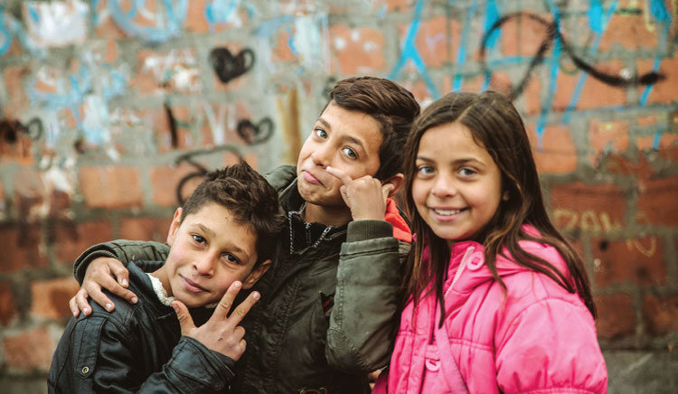

Социалното включване и превенцията на бедността са сред основните приоритети на социалната политика както в България, така и в Европейския съюз и основен акцент в работата на сдружение „Ръка за ръка 8“.
Бедността и социалното изключване оказват негативно влияние върху икономическото развитие, социалната стабилност и качеството на живот на гражданите. Поради това европейските и националните политики са насочени към създаване на устойчиви механизми за подкрепа на уязвимите групи, подобряване на достъпа до заетост, образование и социални услуги. В България основната целева група в това отношение са ромите, като нашето внимание е насочено с приоритет към младежта и жените.
Като държава членка на ЕС, България разработва свои политики в съответствие с европейските стратегически рамки за социална защита и социално включване. Основен национален документ в тази област е Националната стратегия за намаляване на бедността и насърчаване на социалното включване 2030, която определя визията и мерките за ограничаване на бедността и социалното изключване в страната.
Политиките на Европейския съюз в областта на социалното включване се основават на принципите на Европейския стълб на социалните права, който поставя акцент върху равните възможности, достъпа до пазара на труда и адекватната социална защита.
Една от основните цели на ЕС до 2030 г. е значително намаляване на броя на хората, изложени на риск от бедност и социално изключване. За постигане на тази цел се използват различни инструменти, сред които ключово място заема Европейският социален фонд плюс (ESF+). Чрез него се финансират програми за заетост, обучение, социални услуги и интеграция на уязвими групи.
В рамките на периода 2021–2027 г. Европейският социален фонд инвестира значителни средства в България за подобряване на достъпа до трудова заетост, развитие на уменията, социално включване и намаляване на детската бедност.
Друг важен инструмент на ЕС е програмата Employment and Social Innovation (EaSI), която подпомага разработването на иновативни политики за заетост, социална защита и борба със социалното изключване.
В България основният стратегически документ в тази област е Националната стратегия за намаляване на бедността и насърчаване на социалното включване 2030, която поставя конкретни цели и мерки за подобряване на социалната политика. Основната национална цел е намаляване на броя на хората в риск от бедност или социално изключване с около 787 000 души до 2030 г., като се поставя специален акцент върху децата и уязвимите групи.
Политиката за социално включване се реализира чрез различни мерки, включително:
• Активни политики на пазара на труда: насърчаване на заетостта чрез обучение, преквалификация и програми за заетост.
• Социална подкрепа и социални услуги: предоставяне на социални помощи, услуги за хора с увреждания, възрастни хора и семейства в риск.
• Подобряване на достъпа до образование: намаляване на ранното отпадане от училище и подкрепа за равен достъп до качествено образование.
• Подкрепа за деца и семейства: политики за намаляване на детската бедност и социалното изключване.
За изпълнение на стратегията се приемат конкретни планове за действие, които включват мерки, индикатори и институции, отговорни за реализирането им.
В България са реализирани редица инициативи и проекти, насочени към социалното включване и намаляване на бедността.
• Програма „Развитие на човешките ресурси“
Тази програма, финансирана по линия на Европейския социален фонд, подкрепя мерки за заетост, обучение и социално включване на уязвими групи. Тя включва инициативи за повишаване на квалификацията, насърчаване на предприемачеството и подобряване на достъпа до социални услуги.
• Социални услуги в общността
В последните години се развиват социални услуги като: центрове за обществена подкрепа; социални услуги за възрастни хора и хора с увреждания; програми за домашна грижа. Тези услуги подпомагат хората в риск от социална изолация и допринасят за тяхната социална интеграция.
• Програми за хранителна и материална помощ
Чрез европейски и национални програми се предоставят храни и основни материали на хора в нужда, което подпомага най-уязвимите групи от населението. Много европейски държави прилагат успешни модели за борба с бедността и социалното изключване, които могат да служат като пример за България.
• Активни политики на пазара на труда
Държави като Дания и Нидерландия прилагат политики за активно включване на безработните чрез обучение, стажове и индивидуални програми за заетост.
• Социална икономика
В много страни от ЕС се развива социалната икономика – предприятия и организации, които съчетават икономическа дейност със социална мисия, например осигуряване на работа за хора в неравностойно положение.
• Интегрирани социални услуги
Някои държави прилагат интегриран модел, при който социалните услуги, образованието и здравеопазването работят съвместно за подкрепа на уязвимите групи.
Въпреки предприетите мерки, България продължава да се сблъсква със значителни предизвикателства в борбата с бедността и социалното изключване. Сред основните проблеми са: регионални различия в икономическото развитие; ограничен достъп до образование и заетост в някои групи от населението; недостатъчно развитие на социалните услуги в определени региони.
В бъдеще е необходимо по-ефективно използване на европейските фондове, развитие на социалната икономика и по-добра координация между институциите.
Социалното включване и превенцията на бедността са ключови елементи на съвременната социална политика. Европейските стратегии и националните политики в България поставят ясни цели за намаляване на бедността и подобряване на качеството на живот на гражданите.
Реализирането на тези цели изисква дългосрочни усилия, ефективни социални програми и активно сътрудничество между държавните институции, местните власти и гражданското общество. Чрез прилагането на успешни европейски практики и развитие на националните политики България може да постигне по-устойчиво социално развитие и по-голяма социална справедливост.